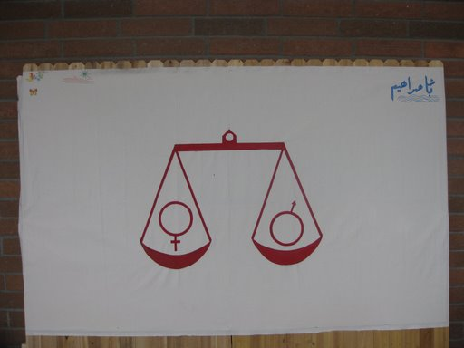
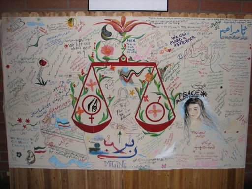

|
|

دوسالانه کمپین با کالیفرنیا
خیال نقش تو در کارگاه دیده کشیدم
روجا بندی
جمعه8 شهریور 1387
پارچه سفیدی که با زحمت زیاد روی بوم کشیده بودیم و بوم بسیار سنگینی که به زحمت زیاد به محل برنامه حمل کرده بودیم و تمام تلاشمان بر این بود که مبادا بر آن لکه ای بیفتد اکنون در دست رهگذران بود و هر نقش و نوشته ای بر آن کشیده می شد. در ابتدا سخت بود که ببینیم خطی بر آن کشیده شده که از نظر ما زیبا نبود یا نوشته ای که حرف ما نبود. ولی جلوی خودمان را گرفتیم و به همدیگر یادآوری کردیم که هدف ما همین است که نقش های دیگران را بر این بوم ببینیم و گرنه به جای آمدن در خیابان خودمان در خانه بر روی آن نقاشی می کردیم. در آخر برنامه عاشق این تابلوی رنگارنگ شدیم. این پارچه سفید و این نقاشی واقعا سمبلی از کمپین یک میلیون امضا بود. کمپین هم مانند بوم ما پارچه سفیدی بود که به دست همه ما ایرانیان سپرده شده و ما نقش های خودمان را بر آن کشیده ایم و آن را زیباتر از همیشه کردیم. این نقاشی را هدیه می کنیم به همه فعالان حقوق برابر علی الخصوص فعالان کمپین یک میلیون امضا. در زیر گزارش کوتاهی از این برنامه را می خوانید

روز شنبه ۲۳ اوت مصادف با دوم شهریور ۱۳۸۷ گروه کمپین در کالیفرنیا برنامه ای به مناسبت سالگرد آغاز کمپین یک میلیون امضا (۵ شهریور) برگزار کرد. در این روز فعالان کمپین با قرار دادن یک بوم نقاشی بزرگ در پیاده روی کنار یک سوپرمارکت ایرانی در اورنج کانتی از رهگذران دعوت کردند تا تصویری از دنیایی برابر را بر این بوم نقش کنند و پیامهای خود را برای فعالان کمپین در ایران بنویسند. هدف داوطلبان کمپین این بود که شهروندان ایرانی مقیم کالیفرنیا حس کنند که در تلاش برای برابری تنها تماشاگرانی منفعل نیستند بلکه هر فردی کنشگری است سرشار از توانایی و خلاقیت و می تواند در راه برابری نقشی بازی کند. این حسی است که اعضای این گروه با فعالیت داوطلبانه در کمپین یک میلیون امضا تجربه کرده اند و هدف آنها این بود که از طریق این کار هنری دست جمعی بتوانند آن را به دیگران نیز منتقل کنند.
در کنار این بوم روی چند میز جزوه های حقوقی کمپین همراه با برگه های امضا به چشم می خورد. علاوه بر آن بروشورهای اعتراض به لایحه حمایت از خانواده و جزوه های ترجمه شده خشونت خانگی در آمریکا و نیز اطلاعاتی درباره خشونت نسبت به زنان بر روی میز کمپین وجود داشت. داوطلبان کمپین در کالیفرنیا سعی دارند تا در حالی که به اطلاع رسانی درباره قوانین تبعیض آمیز و کمپین می پردازند از این پس توجه بیشتری نیز به مشکلات زنان مهاجر ایرانی داشته باشند و به مسایلی از قبیل خشونت خانگی در میان خانواده های ایرانی مقیم کالیفرنیا نیز بپردازند. سه پوستر آموزشی در این برنامه به چشم می خوردند که دو عدد از این پوستر ها به توضیح قوانین و معرفی کمپین یک میلیون امضا می پرداختند و سومی درباره خشونت خانگی و آمار آن در آمریکا بود.

به منظور ایجاد فضایی گرم و صمیمی برای خانواده ها دو میز مخصوص کودکان نیز قرار داشت که یکی برای نقاشی بچه ها و دیگری ایستگاه رنگ آمیزی روی صورت کودکان بود. چند قدم آنطرف تر در کنار چایی و شیرینی نوشته «ایستگاه درد دل» بر روی یکی از میزها به چشم می خورد که محلی بود برای شنیدن حرفهای رهگذران و مهمانانی که نابرابری را در زندگی خود تجربه کرده اند. استقبال رهگذران و علاقمندان کمپین از این برنامه بسیار جالب بود به طوری که تابلوی برابری که در ابتدا تنها نقش ترازوی کمپین بر آن بود در آخر برنامه پر از نوشته ها و نقش های مردم شده بود. فعالان کمپین در کالیفرنیا امیدوارند که این تابلو را در یک نمایشگاه به نمایش بگذارند. این داوطلبان بیش از دو ماه به طور فعال روی این پروژه کار کردند تا این برنامه به خوبی برگزار شود.